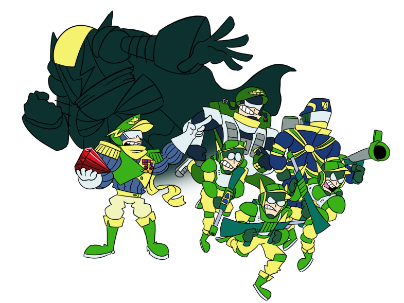
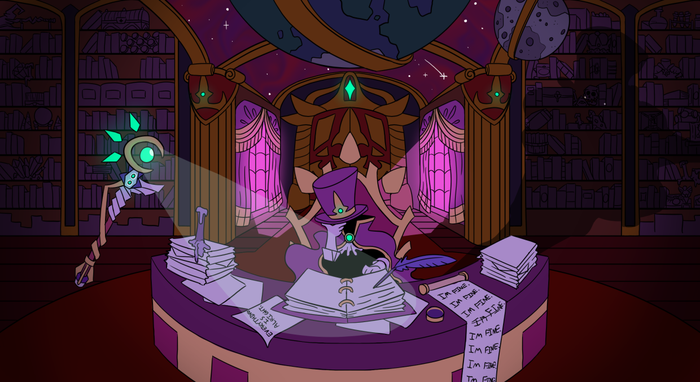

Story
The story mainly follows Rocket, a young boy who wants to become a hero of the land. He comes to realize that there is more to saving others besides taking down the villain of the day. The story will cover aspects of mental health and contains elements of depression and suicide. Emotional wellbeing is an immense part of the focus for the game, even centering the magic system on emotions and having emotional care in combat.
Even though the game would cover some heavy topics, I want the general tone of the game to be lighthearted and fun. I want to have the dialogue be humorous and witty. This would be contrasted by characters like Sho-King, the mysterious captain of the military “SKIES”, who is dangerously serious about achieving their goal in collecting the magic gems.
The hero team will travel through an odd variety of areas like a colorful toy canyon full of sentient cannon creatures, a candy forest with a troubled history, and an overgrown casino town where shady tactics are promoted. They get caught up in many wacky scenerios like battling pirates who wield fish, robbing a train, and a high speed car chase escaping from a zombie drug cartel boss.
Inspiration
This is a personal game I have been working on since I was around 8 years old. Paper Mario The Thousand Year Door has always been my favorite game, and I have wanted to see a sequel to it. Unfortunately, the series would take a different direction than I wanted, so I have been trying to make my own sort of sequel successor game to it. It transformed from a fanmade Mario game, which I had called “Mario and Luigi’s Epic Quest”, into a more original title. I combined ideas I had from other different titles like Megaman, where I had my own fanmade robot masters, into the game to add some more ideas into the mix. I had to stray away from the stage elements of Paper Mario The Thousand Year Door in favor of more flexable combat strategy. Eventually, it came to be called Mech Quest. The title’s purpose is to highlight the nature of magic and adventure mixed in with futuristic elements like robots. This game from the start has always been a passion project that combined ideas from other titles.
The main antagonist, Marvallo the worlds most powerful wizard, has been part of the game since inception. He has gone from a generic villain to a troubled isolationist who struggles with immense self hatred. His personal issues end up affecting the world around him passively since magic is tied into emotions. A question is left up in the air about whether he even has intentions to destroy the world, or if everything is just a big misunderstanding. He is veiled in mystery and blocked off from the rest of the world. His actions are confusing even to his closest allies, who believe he plans to destroy the world in a spectacular manner. It is up to Rocket and his friends to penetrate the barrier he has amassed around himself and uncover the truth.